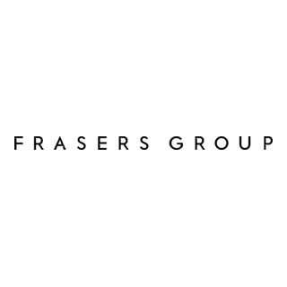
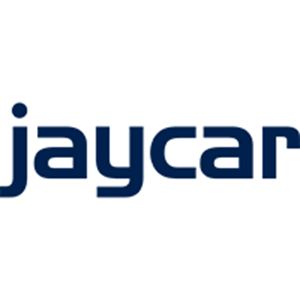

BFL Store — AI-powered search that understands intent
What we found in your search data — and how NeuralSearch can help
lipstick 5→101watches for women 44→100waterproof shoes 6→97perfumes for men 25→98diaper bag 4→100bath robe 6→96formal shoes for men 20→100wallet for men 42→104thermal leggings 3→101safety shoes for men 5→100crocs for men 45→100tweed 8→69
We ran your search data through our NeuralSearch engine. Here's what we found — and where we see clear opportunities. Let me show you the five opportunities we identified.
Your search data
We ran your top 10,000 queries through NeuralSearch. Here's what we found.
~21.7M monthly searches · Top 10K queries analyzed
5 opportunities we'll walk through:1. Thin results2. No results3. Natural language4. Conceptual5. Relevancy
We ran 10,000 of your top queries through NeuralSearch. Your data shows 907 thin-result queries affecting 674K searches a month — that's 3.1% of your search traffic hitting a wall. Your no-results rate matters too — for most retailers it's a major opportunity. I'll walk you through the five opportunities we found.
Why NeuralSearch matters
50–70% of search traffic is long-tail. Keyword search misses most of it.
~21.7M monthly searches · API returns top 10K queries only
Top 10KWhat we analyzed
Long tail50–70% of traffic · Keyword search misses most
NeuralSearch improves both segments — the top 10K and the long tail beyond.
Example queries from your data — keyword search struggles with these
watches for womenformal shoes for menwaterproof shoesgift for new momperfumes for mendiaper bag
Shoppers don't search like your catalog. They use natural phrases and concepts. Keyword search matches characters — NeuralSearch matches intent. More discovery, fewer dead ends.
Half to two-thirds of your search traffic is long-tail — unique phrases, natural language, conceptual queries. Keyword search was built for exact matches. It can't connect "gift for new mom" to diaper bags, or "waterproof" to products that say "rain cover." NeuralSearch closes that gap. Retailers we've tested have seen dramatic drops in zero-result searches and increases in conversion.
1. Thin results
A handful of results when you have more to offer — and NeuralSearch surfaces the right ones.
Without NS
5, 6, 3, 8
With NS
101, 96, 101, 69
Search
Without NS
With NS
Searches
lipstick
5
101
2,780
bath robe
6
96
1,647
thermal leggings
3
101
1,076
tweed
8
69
1,018
diaper bag
4
100
1,601
waterproof shoes
6
97
1,444
snow pants
10
95
2,671
helmet
6
100
2,148
christmas sweater
2
95
—
tennis skirt
10
98
1,290
keychain
7
98
1,510
long socks
9
99
1,286
You have the inventory — lipstick, bath robes, thermal leggings, tweed — but keyword search only surfaces a handful. NeuralSearch expands discovery with relevant results. It's not just more results; it's the right results. This is exactly the "fewer zero-results" benefit in action — you have the products, search just wasn't finding them.
2. No results
Zero results when you have the products — NeuralSearch turns dead ends into discovery.
0Without NS
42With NS
For most retailers, no-results rate is a major opportunity. Typos, synonyms, and alternative phrasing return zero — but you have the products.
Search
Without NS
With NS
Searches
addidas
0
89
—
cologne for men
0
95
—
makeup
0
102
—
mens perfume
0
88
—
nike runing shoes
0
76
—
womens watches
0
112
—
No results is critical for most customers — even if your account has few today. Keyword search fails on typos like "addidas," synonyms like "cologne" for perfume, or phrasing like "makeup" when your catalog says "cosmetics." NeuralSearch understands intent and surfaces products. Frasers Group saw an 80% drop in no-result searches. This opportunity matters.
3. Natural language
Shoppers search the way they talk. NeuralSearch surfaces relevant results for natural phrases.
"watches for women"
"formal shoes for men"
17,600 searches
Search
Without NS
With NS
Searches
watches for women
44
118
17,600
formal shoes for men
20
105
8,500
wedges for women
51
108
—
wallet for men
42
110
8,745
perfumes for women
49
112
3,096
crocs for men
45
108
9,552
caps for men
353
378
16,933
belt for men
34
102
6,032
heels for women
42
108
3,607
socks for men
137
152
14,794
bags for men
250
272
7,808
perfume for her
35
102
1,798
Shoppers don't search like your catalog. They type "watches for women" or "formal shoes for men" — natural phrases. Keyword search misses a lot because it's matching characters, not intent. NeuralSearch understands and surfaces relevant results. 17,600 searches for "watches for women" alone. This is the natural language benefit — shoppers search the way they talk, and NeuralSearch gets it.
Keyword search can't connect concepts. "Waterproof shoes" won't match "Rain Cover" or "Snow Boot" — those words aren't in the query. NeuralSearch understands semantics and surfaces the right products: rain covers, snow boots, Safety Jogger shoes, diaper bags. Relevant results, not keyword gymnastics. This is conceptual understanding — the AI connects intent to products even when the words don't match.
5. Relevancy
Few results shown for high-volume searches. NeuralSearch surfaces more relevant options.
25 Without NS
98 With NS
perfumes for men · 12K searches · 6.2% CVR
Search
Without NS
With NS
CTR
CVR
Searches
perfumes for men
25
98
27.4%
6.2%
12,000
wallet for men
42
104
38.2%
4.0%
8,745
perfumes for women
49
106
26.1%
8.1%
3,096
watches for women
44
115
29.8%
5.1%
17,600
formal shoes for men
20
98
34.7%
2.5%
8,500
crocs for men
45
108
38.0%
8.4%
9,552
socks for men
137
148
41.4%
17.2%
14,794
caps for men
353
368
39.0%
11.5%
16,933
belt for men
34
98
44.3%
8.8%
6,032
heels for women
42
108
25.8%
2.4%
3,607
bags for men
250
268
35.4%
7.5%
7,808
vans shoes for men
63
112
47.0%
8.6%
8,117
High volume + few results means the right products are buried. "Perfumes for men" — 12,000 searches, only 25 results shown. "Wallet for men" — 8,745 searches, 42 results. NeuralSearch surfaces more relevant options. We can show you the before/after in a live demo. These are high-intent searches with strong CTR and CVR — improving relevance here has real revenue impact.
Revenue impact — your numbers
This is the crescendo. Your data. Your upside.
Projected monthly uplift (example: $80 AOV)
$57,000
≈ $684K annually
Your inputs
674,000 eligible searches/mo
4.2% baseline CVR
2.5% CVR uplift (measured)
Plug in your AOV
674K × 4.2% × 2.5% × AOV
$50 AOV → $35K/mo · $100 AOV → $71K/mo
This is real. 674K searches a month hitting thin results. A 2.5% CVR uplift from measured A/B tests. Plug in your AOV — the number gets big fast. This is why we're here.
What is NeuralSearch?
AI-powered search that understands intent — not just keywords.
Keyword
Matches exact characters
+
AI understanding
Matches intent & meaning
=
NeuralSearch
Hybrid search in milliseconds
NeuralSearch combines traditional keyword search with semantic understanding. It uses the same AI technology behind tools like ChatGPT to understand what shoppers mean, not just what they type. Every query runs both keyword and vector search in milliseconds, then merges and ranks results by relevance.
waterproof shoes → Rain Cover, Snow Boot
gift for new mom → diaper bags
lipstick → lip color, lip gloss
formal shoes for men → dress shoes, oxfords
thermal leggings → thermal tights, base layers
safety shoes for men → Safety Jogger, work boots
watches for women → women's watches
bath robe → bathrobes, robes
perfumes for men → cologne, fragrance
diaper bag → baby bags, changing bags
wallet for men → men's wallets
gift set for women → gift sets, beauty sets
NeuralSearch is Algolia's AI-powered search. Think of it as the difference between a librarian who only matches exact titles versus one who understands what you're looking for. When someone searches "waterproof shoes," keyword search looks for those exact words. NeuralSearch understands they want rain boots, snow boots, anything that keeps feet dry — and surfaces those products even when the catalog says "Rain Cover" or "Snow Boot." It's hybrid search: keyword precision plus AI understanding, in a single API, at the same speed you expect from Algolia.
Benefits
More discovery. Better relevance. Less work.
Fewer zero-result searches — surfaces relevant products even when keyword search returns nothing or very few results
Natural language & synonyms — watches for women, formal shoes for men, wallet for men, perfumes for women, heels for women
Conceptual understanding waterproof shoes → rain boots gift for mom → diaper bags safety shoes → work boots
Zero engineering & future-proof — toggle on/off, A/B test, no reindexing, new products get relevance automatically
The benefits break down into three buckets. First, discovery: NeuralSearch eliminates dead ends. Frasers Group saw a 65% drop in zero-result searches in testing. Second, relevance: it understands natural language and concepts, so you don't need to maintain synonym libraries or keyword mappings. Third, simplicity: it's backward compatible. You flip a switch, no reindexing, no code changes. New products automatically get better relevance. It's AI that works with your existing setup, not against it.
Who's using NeuralSearch
Measured results from live A/B tests across fashion, electronics, pharmacy, grocery & specialty retail.

Frasers GroupFashion & retail
80%↓ No Results4%↑ CVR7.5%↑ CTR
Secret SalesFashion
91%↓ No Results14.5%↑ CVR12.2%↑ Purchase rate

JaycarElectronics
93%↓ No Results1.3%↑ CVR4.2%↑ CTR
WalgreensPharmacy
$842KAnnual uplift1.8%↑ Revenue2.5%↑ CVR
ZamnesiaSpecialty e-commerce
86.6%↓ No Results2%↑ CVR2%↑ CTR
Auto MercadoGrocery
74.4%↓ No Results14.5%↑ CVR12%↑ CTR
Frasers Group. Secret Sales. Walgreens. Jaycar. Zamnesia. Auto Mercado. Real brands, real results. Walgreens projected $841K annual uplift from their test. When the best of the best are on it, that's the signal.
Why NeuralSearch for BFL Store
Summary for stakeholders.
Problem
Thin results on high-volume queries
Keyword search misses 50–70% of traffic (long tail)
Solution
AI understands intent, not just keywords
Better results for natural language & concepts
Proof
6 customers across retail verticals
Walgreens: $842K projected annual uplift
Secret Sales: 45% revenue increase
Next step
30-day free A/B test
Overages waived · Full control to pause
For anyone who needs the elevator pitch: here's the problem, the solution, the proof, and the ask — all on one slide.
Why now
Every week you wait is another week of missed conversions.
The cost of waiting
Shoppers expect AI-level relevance
Average query length increasing with widespread AI usage
Thin-result queries = money left on the table
Zero risk to try
Free trial
Overages waived during test
Full control to pause or roll back
No commitment until you see results
The only way to get your number is to run the test. And there's no downside — free trial, overages waived, you can pause or roll back anytime. No commitment until you review the data.
Why Algolia NeuralSearch
Built for production retail search — not log analytics.
Fast — Sub-50ms at scale. Neural Hashing™ keeps it fast.
Learns — Uses your click & conversion data. Gets smarter over time.
Hybrid — Keyword + vector in one. No separate setup.
Simple — No reindexing. Toggle on. Preview before going live.
Algolia NeuralSearch is built for production search at scale — not log analytics or billions of documents. Fast, learns from your data, hybrid out of the box, and simple to deploy.
Features
Hybrid search. Neural Hashing. No reindexing.
Hybrid search — every query: keyword + vector, merged in <50ms
Neural Hashing™ — sub-50ms at 21M+ monthly searches
No reindexing — new products and catalog updates get relevance automatically
Preview mode — test before going live; validate results with your data
Example use cases: thin results (lipstick, bath robe), natural language (watches for women), conceptual (waterproof shoes), relevancy (perfumes for men), typos (addidas→adidas), synonyms (cologne→perfume)
On the technical side: NeuralSearch runs keyword and vector search on every keystroke, merges results, and ranks by relevance — all in milliseconds. Algolia's Neural Hashing compresses the AI model so it stays fast at scale. New products get relevance automatically — no reindexing required. You can test in Preview Mode before going live and measure the impact with your own data. No rip-and-replace.
Multi-lingual out of the box
NeuralSearch understands 50+ languages. No separate indices. Cross-lingual matching — Arabic queries find English catalog, and vice versa.
English queries (your data)
shoes for menjacket for menwatches for womendress for womenmen's shoesmen's watches
Keyword search can't connect "فستان" to "dress" or "جاکیت" to "jacket" — different scripts, no exact match. NeuralSearch understands intent across languages. One index. No translation layers. Works out of the box.
NeuralSearch is multi-lingual out of the box. It understands 50+ languages with no configuration. Your shoppers search in both English and Arabic — جاکیت means jacket, فستان means dress, ملابس means clothes. Keyword search can't connect these to your English catalog. NeuralSearch does. Cross-lingual matching: one index, no separate language indices, no translation layers. It's a huge benefit for retailers in multilingual markets like the Gulf.
Adaptive Intent — learns from your customers
Customer behavior becomes training data. Results adapt in real time. No fine-tuning required.
1. Search
"beach dress"
→
2. Clicks & purchases
Customer behavior
→
3. System learns
"When people search X, they buy Y"
→
4. Results adapt
Products that convert
Generic AI
"Beach dress" → semantically similar products.
Adaptive Intent
"Beach dress" → the dresses your customers actually buy.
Learns brand names & niche termsUses your existing click & conversion eventsIncluded with NeuralSearch — no extra cost
Adaptive Intent turns customer behavior into intelligence. Every click and conversion trains the system on what your customers actually want. Search for "beach dress"? Generic AI shows semantically similar products. Adaptive Intent shows the dresses your customers buy — because it learned from thousands of past purchases. It's night and day. No fine-tuning, no data science team. Works automatically with your existing event data.
Top 100 NeuralSearch-fit queries
High-volume, high-intent queries where NeuralSearch can improve discovery and relevance.
shoes for menjacket for menshoes for womenwatches for menwatches for womencaps for menjeans for mensocks for menperfumes for menhoodies for womenbra for womenbasketball shoes for menwide legwallet for menrunning shoes for menjacket for womenformal shoes for menshoes for kidsbags for menboxers for mensandals for menbath robethermal leggingsdiaper bagwaterproof shoessnow pantstennis skirtchristmas sweaterlong socksgift for momgift set for womensafety shoes for menevening dressleather jacket menpadel racketski glovesperfume for herwedges for womendress for womensandals for womenpajama set for womentote bag for womenbelt for menheels for womenperfumes for womenlipstick for womengym shoes for mensport jacket for menlong sleeve shirtwhite dress for womenblack dress for womenski jacket for mencomfortable shoes for mengift for dadwinter jacket for mensummer dress for womenrunning shoes for womentote bag for menhoodies for mensweat pants for menbackpack for menbody lotion for womenwide leg pantswaterproof jacketfit and flare dressجاکیت برای مردانفستان برای زنانملابس مردانهطقم زنانهheadphones for menbath robe for womenwork boots for mendress shoes for mencasual shoes for menswim shorts for menblazer for mencardigan for womenmaxi dress for womenmidi dress for womenankle boots for womenboots for mensneakers for mensneakers for women
These are the top 100 queries that are strong fits for NeuralSearch — semantic phrases, natural language, conceptual queries, and revenue opportunities. Combined, they represent millions of searches. Here's how we can move forward.
Next step
Run your A/B test — zero-dollar trial, overages waived, full control to pause or roll back.
1. Sign trial
2. We enable NeuralSearch
3. You're live in Preview Mode in days
4. 30-day A/B test — review CVR, revenue, no-results rate together
5. You decide
Specific ask: I'm sending a calendar invite for a 30-minute A/B test kickoff. We'll have you in Preview Mode by end of week. You'll see your before/after in your own dashboard. At the end of 30 days, we review the data together — CVR, revenue, no-results rate — and you decide. No commitment. The test is free. Overages during the test are waived.
1 of 20 · ← → or click to advance · F11 fullscreen